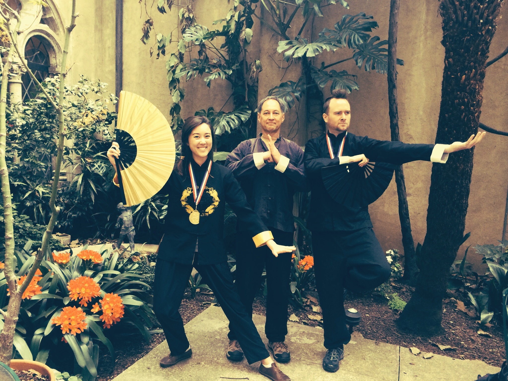
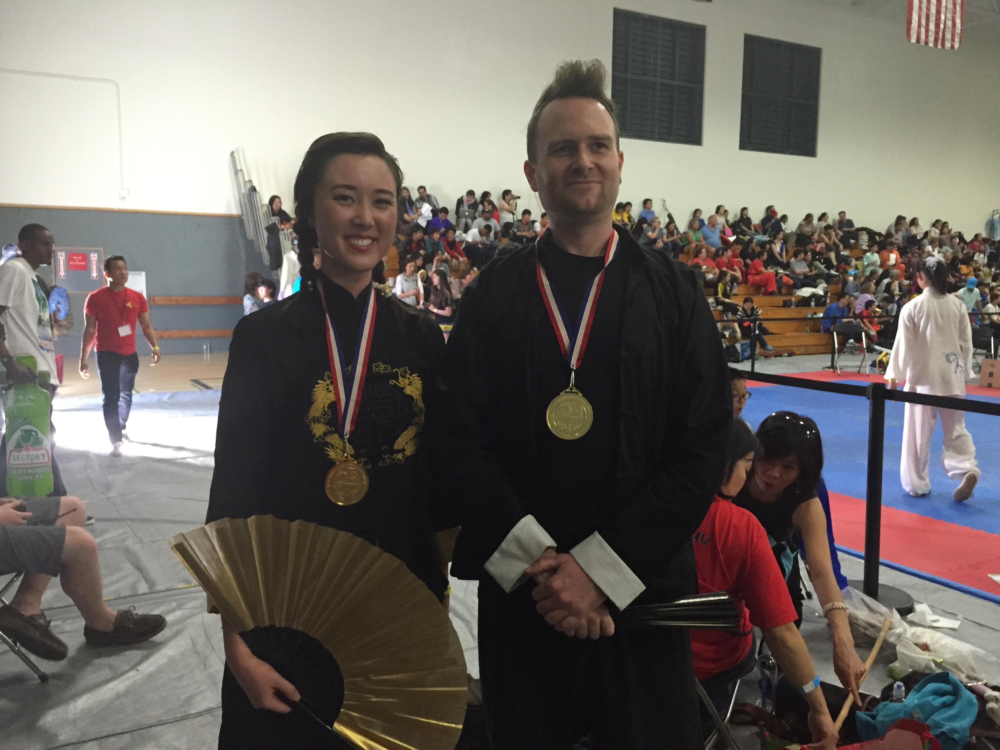
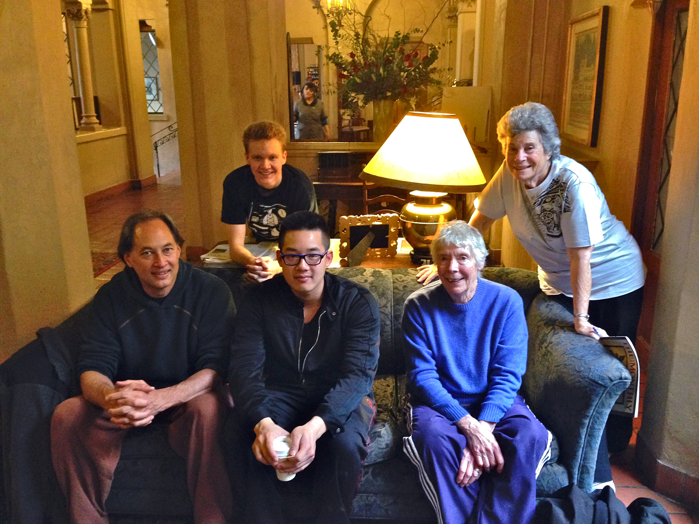
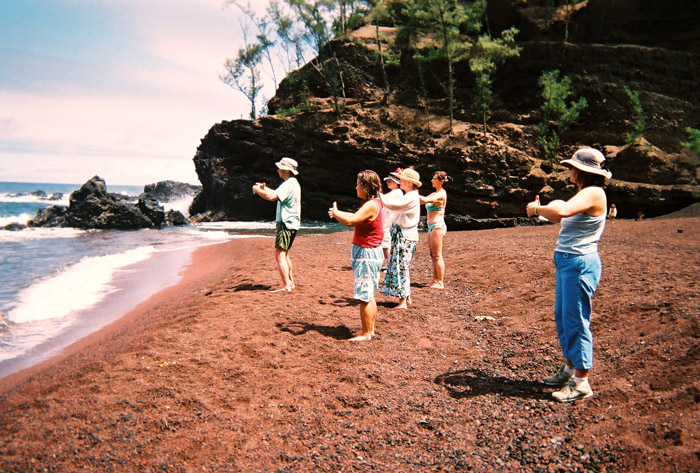
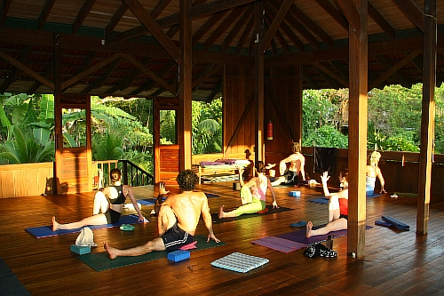

News
Starfire's students, Jaclyn Burge and Quinn Walker, both won gold medals in their divisions competing in the March 2015 CMAT, the largest Chinese Martial Arts Tournament in the Western Hemisphere, held annually in Berkeley, CA. Jaclyn and Quinn both performed the Internal Tai Chi Short Weapon Fan Form, with Quinn also competing in the Internal Open Yang division. 

Join the UC Berkeley RSF group for coffee and conversation at the Berkeley City Club after class! 

Stay tuned for the next Starfire Tai Chi Retreat in Hawaii! 